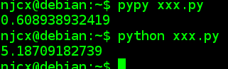

介绍
PyPy是Python语言的动态编译器，PyPy提供了JIT编译器和沙盒功能，运行速度大部分情况下比CPython要快，以及可以安全的运行一些不被信任的代码。PyPy分两部分，rPython实现的Python(前端部分)和一个rPython的编译器（后端部分）,由于rPython是Python的严格子集，因此PyPy Python解释器可以在另一个Python实现之上运行,只不过比较慢而已.那什么是JIT呢？通常，程序有两种运行方式：静态编译与动态解释。静态编译的程序在执行前全部被翻译为机器码，而解释执行的则是一句一句边运行边翻译。即时编译器则混合了这二者，一句一句编译源代码，但是会将翻译过的代码缓存起来以降低性能损耗。相对于静态编译代码，即时编译的代码可以处理延迟并增强安全性。即时编译器有两种类型，一是字节码翻译，二是动态编译翻译。其中，PyPy是字节码翻译，CPython的字节码只会加快导入加载速度，并不会加快运行速度。
安装
PyPy安装，一般我推荐使用包管理工具安装，因为我试了一下编译，我编译了4个小时，成功的把我的电脑编译死机了，如果，生产环境是centos的话，还是比较推荐编译的，centos 源里面的软件真心老。
debian/ubuntu： sudo apt-get install pypy pypy-dev pypy-lib -y
red hat/centos : yum -y install pypy-libs pypy pypy-devel
ubuntu ppa:
sudo add-apt-repository ppa:pypy/ppa
sudo apt-get update
使用以及注意事项
PyPy毕竟不是亲娘生的，相比CPython，PyPy对C拓展支持存在兼容性问题，如果项目使用的是纯Python写的，那么就可以大胆使用PyPy了，主流的web框架不会存在问题，主要是一些CPU密集型类库容易出问题，比如一些科学计算的库，因为这种类型的库一般含有C源码，不过，这种兼容性现在在慢慢改善。PyPy的解释器一般位于/usr/bin/pypy,使用pip的时候，可以通过 pypy -m pip install xxx
性能测试
由于PyPy加持JIT，会在频繁使用循环和多次调用同一个函数的时候爆发出异样的风采，下面简单测一下性能
import time
t = time.time()
for i in xrange(10**8):
continue
print time.time() - t
循环10**8次，然后统计时间

可以看出CPython被吊打了
未来展望
由于CPython存在历史遗留问题（C API），导致PyPy对C拓展支持存在兼容性问题，我们应该做什么呢？ 我们可以在在粘结代码中推进新工具的使用 ( cffi, bitey)，在公共库中停止对CPython的底层属性（C API，C扩展）的依赖。作为替代，采用有如下功能的中间工具：
- cffi - 简化对C库的应用
- cython - 编写可移植的C扩展，Cython已经有CPython和PyPy后端。
由于，CPython的 C拓展 API存在跨版本不兼容问题，已经成了历史问题了，面向未来，我们更推荐使用 cffi 的使用，此外，ctypes的表现不如cffi那么好,PyPy官方更推荐使用cffi。很多人说，PyPy是Python的未来，但是，未来谁又说的清呢？